Danchi Book
団地ブック
チーム4.5畳が年に一度発行している団地同人誌です。メンバーそれぞれの偏愛——市街地住宅、ツインコリダー、給水塔、ダンメン、アニマルライド——を毎号の特集として一冊にまとめています。創刊準備号（第0号）の発行は2014年11月。以来、毎年夏から秋にかけて新刊を出しています。バックナンバーの多くは完売していますが、最新号と一部の号はイベント会場・取扱書店・通販で頒布中です。
01
最新号
Latest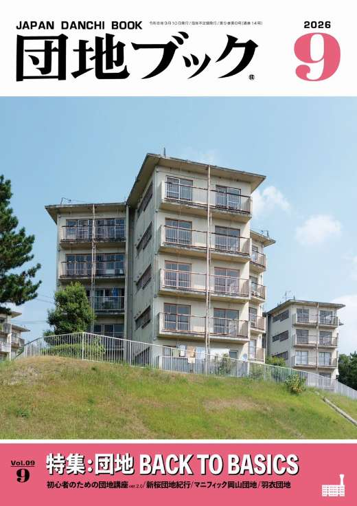
ゲスト執筆者を迎え、静岡市の団地見学ツアーをフィーチャー。
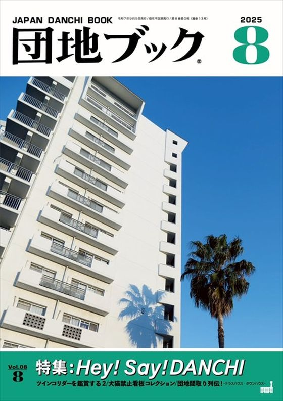
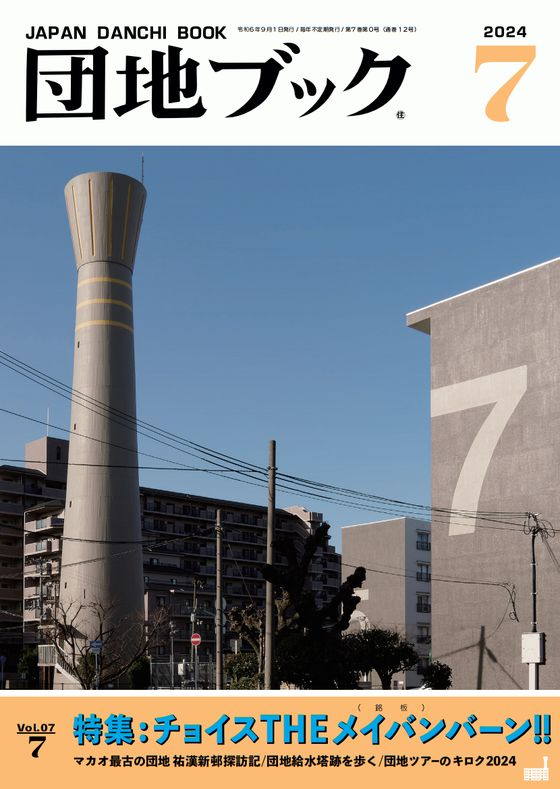
02
刊行一覧
Back Numbers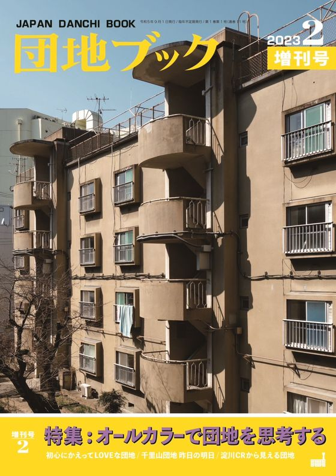
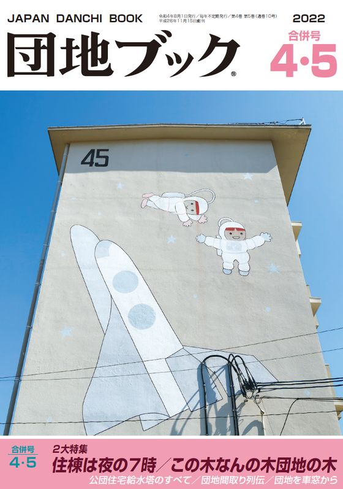
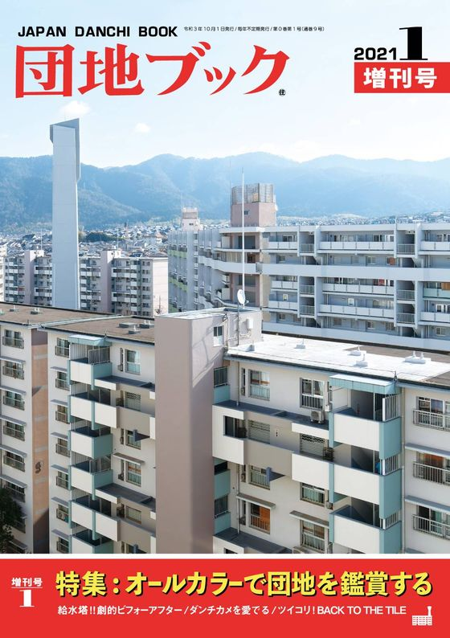
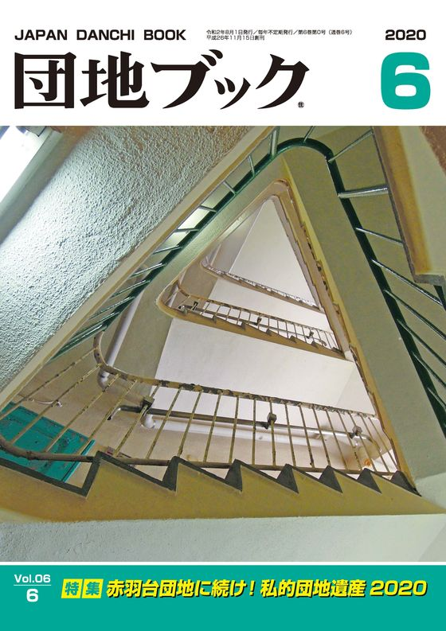
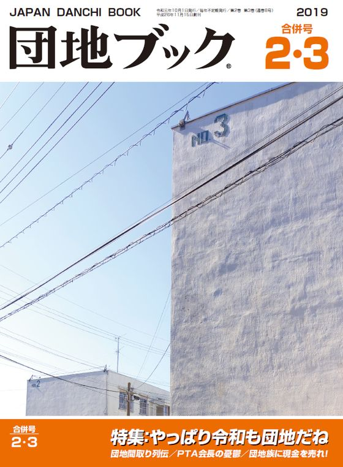
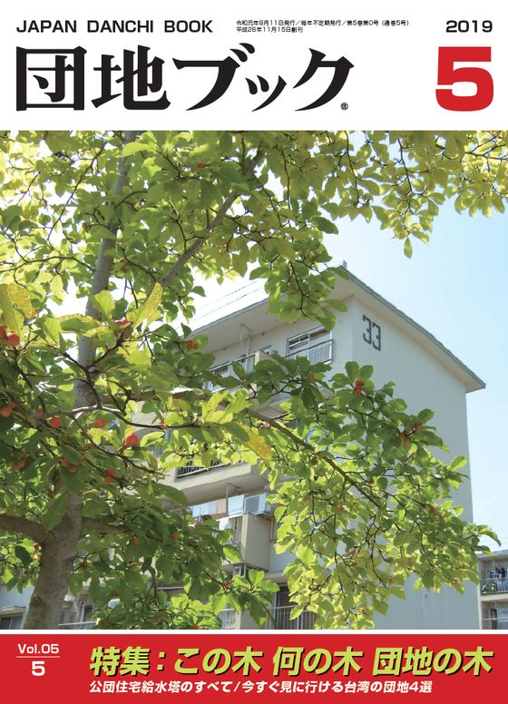
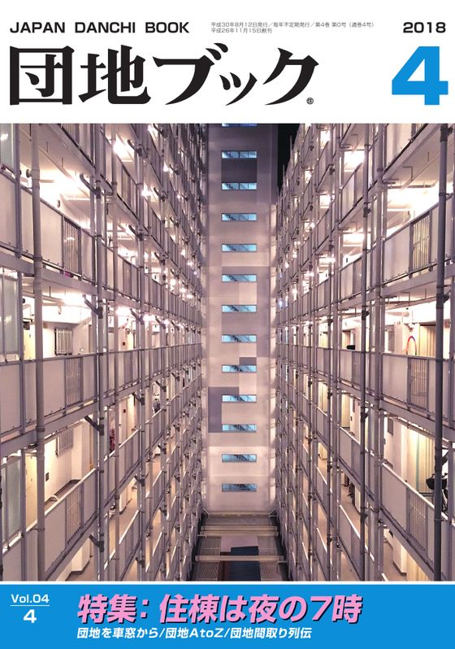
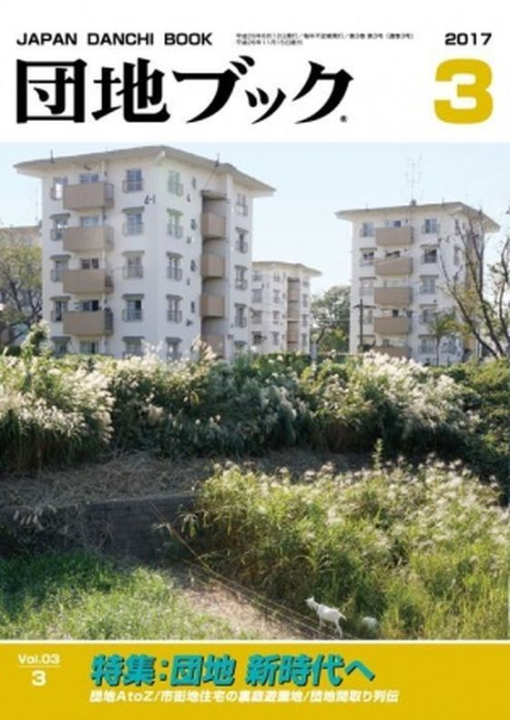
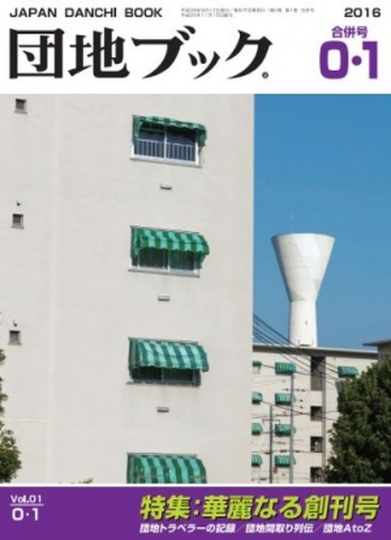
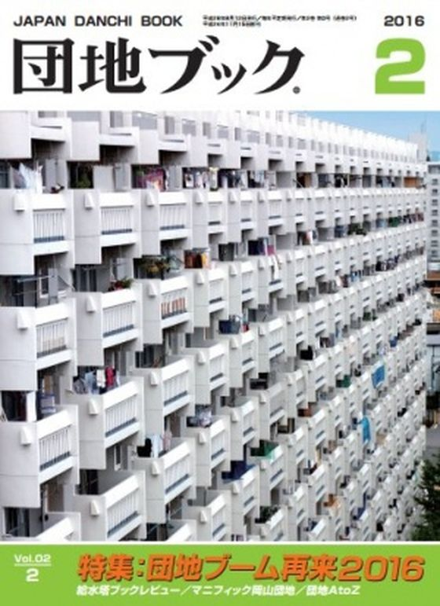
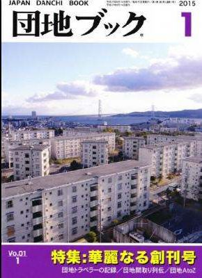
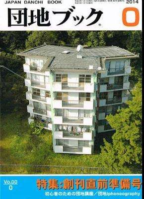
赤枠が現在頒布中の号です。通販の取扱書店は号によって異なります。特集名は各号の表紙より。在庫状況は変動しますので、お探しの号はお問い合わせください。
03
頒布方法
How to Get団地ブックは、同人誌即売会などのイベント会場、取扱書店、通販の3つの方法で頒布しています。
- イベント会場での頒布文学フリマ、おもしろ同人誌バザール、ZINEフェスなどに出店しています。既刊・増刊号もあわせて持参します。活動年表を見る
- 取扱書店での頒布シカク（大阪・此花）、FOLK old book store、1003、みつづみ書房、本町文化堂、とほん、甘夏書店、はちみせ、BiblioMania（名古屋）ほか。営業日・在庫は各書店の公式情報をご確認ください。店頭
- 通信販売シカク、甘夏書店、1003、乃帆書房、はちみせなどのウェブショップで取り扱っていただいています。各号のリンクは刊行一覧から。通販
在庫状況は変動します。お探しの号があるときはX @team4_5 までお問い合わせください。